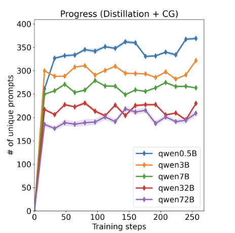
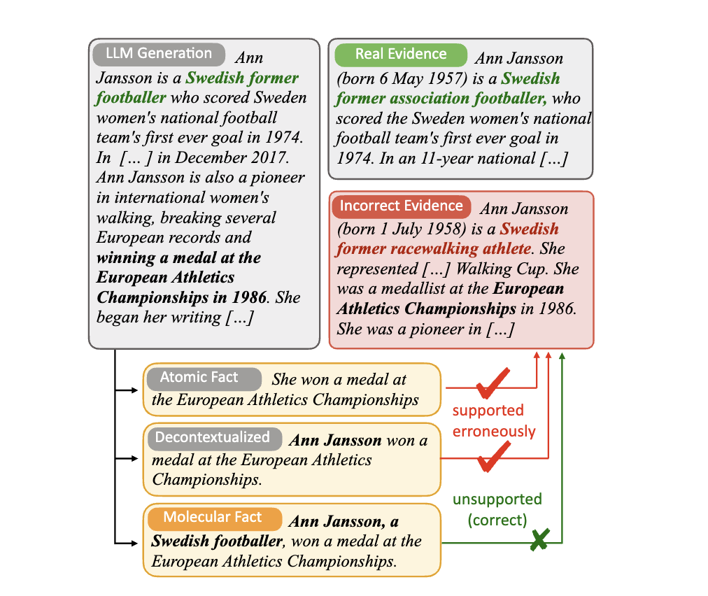

|
Anisha Gunjal
I am a Machine Learning Research Engineer at Scale AI, where I research on reasoning and alignment in large language models. My research also focuses on building robust datasets and evaluation benchmarks to promote trustworthiness and safety in LLMs. I recently completed my M.S. in Computer Science at UT Austin, where I was advised by Prof. Greg Durrett at the TAUR Lab. At UT, my research centered on fact verification and evaluation for language model outputs.
Prior to this, I was a Visiting Scholar at the Cognitive Learning for Vision and Robotics Lab (CLVR) at the University of Southern California, advised by Prof. Joseph Lim. I also served as the Lead Machine Learning Engineer for Documents AI at HyperVerge, Inc., where I built scalable OCR and information extraction systems deployed across South and Southeast Asia.
Beyond the realms of research, I love traveling, salsa dancing, and capturing the adventures of my canine companions!
Email /
CV /
Scholar /
Twitter /
Github /
LinkedIn /
Blog
|
|
|
Research
My research lies at the intersection of post-training, alignment, and trustworthiness in large language models, with a focus on human-grounded machine learning. I develop methods that enhance the reasoning capabilities and interpretability of LLMs through post-training techniques such as RLHF, rubric-guided reward modeling, and preference optimization. A core part of my work involves constructing high-quality evaluation benchmarks and datasets that reflect real-world complexity and human values, enabling more reliable and transparent AI systems.
|
|

|
Adaptive Guidance Accelerates Reinforcement Learning of Reasoning Models
V. Nath, E. Lau, Anisha Gunjal, M. Sharma, N. Barhate, S. Hendryx
arXiv preprint, 2025
paper
Introduces "Guide", a new class of reinforcement learning algorithms that integrates adaptive guidance to significantly improve reasoning in LLMs.
|
|

|
Molecular Facts: Desiderata for Decontextualization in LLM Fact Verification
Anisha Gunjal, Greg Durrett
EMNLP Findings 2024
paper
Studies how context affects LLM fact verification and introduces the concept of “molecular facts” to isolate and evaluate factual reasoning.
|
|
|
Detecting and Preventing Hallucinations in Large Vision Language Models
Anisha Gunjal, Jihan Yin, Erhan Bas
AAAI 2024
paper
Reducing Hallucinations in LVLMs using a novel benchmark dataset M-HalDetect which is used to train fine-grained reward models
capable of detecting unfaithful text generations for a given image context.
|
|
|
Drafting Event Schemas using Language Models
Anisha Gunjal, Greg Durrett
arxiv preprint 2023
paper
Generating and automatically evaluating lightly structures complex event schemas using large language models.
|
|
|
Task-Induced Representation Learning
Jun Yamada,
Karl Pertsch,
Anisha Gunjal,
Joseph Lim
ICLR 2022
project page /
paper
Investigation of using task information for learning representations for RL in visually complex scenes.
|
|
|
Document Visual Question Answering
Anisha Gunjal,
Vipul Gupta,
Moinak Bhattacharya,
Digvijay Singh
CVPR 2020, Leaderboard Rank: 4
code
/
blog
/
workshop
Joint modeling of text and layout information using transformers for Visual Question Answering on unstructured documents.
|
|
|
Diabetic Retinopathy Grading using Deep Siamese Network
Anisha Gunjal
ICML 2018, Poster Presentation
paper
/
workshop
Contrastive Learning on retinal images for determining the stage of Diabetic Retinopathy disease progression on a small sized medical image dataset.
|
Clone this to overcome good website design FOMO!
|
|
{kind=link}